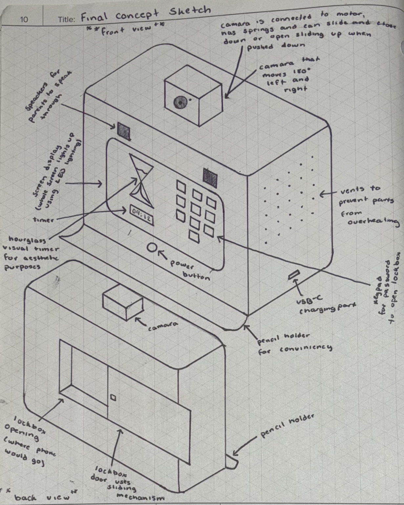
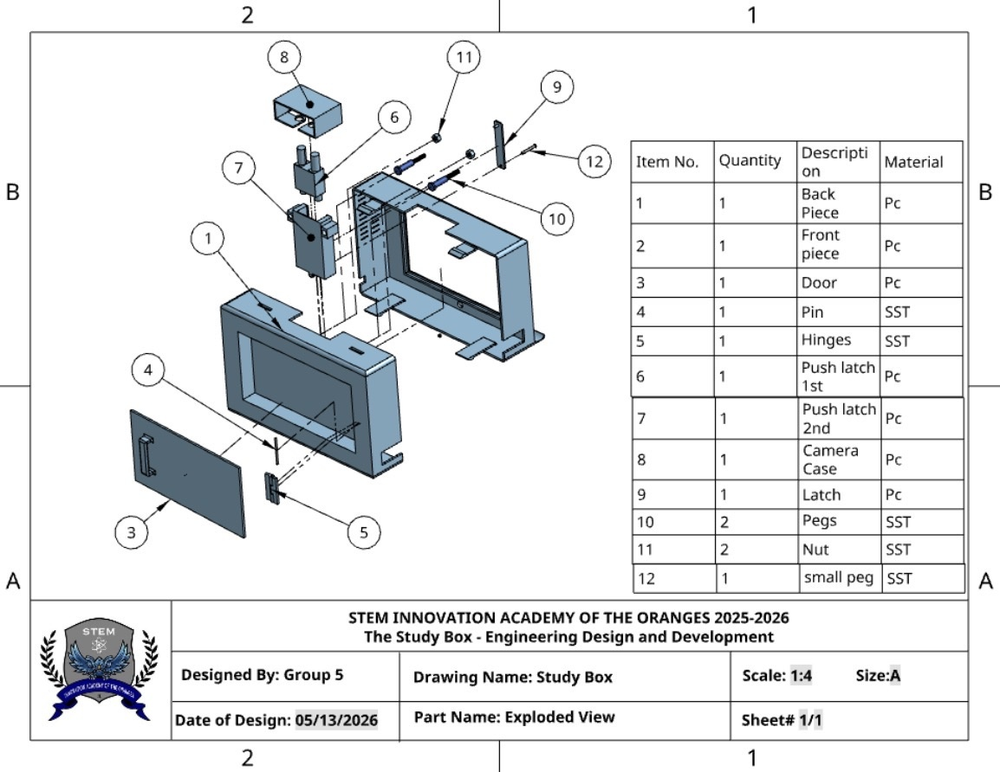

Design & Creativity
Mechanical design, concept sketches, technical drawing, and CAD.
Interested in mechanical design and engineering, with a hands-on approach to learning, solving problems, and developing ideas.
I am currently pursuing a bachelor's degree in Mechanical Engineering Technology and continuing to develop my skills in design and engineering. I enjoy learning new things, working through challenges, and putting effort into completing tasks carefully.
My high school engineering classes introduced me to design projects, research, technical drawings, and prototyping. Outside of school, I work at QuickChek, draw in my free time, and work out when I can.
Mechanical design, concept sketches, technical drawing, and CAD.
Prototyping, material selection, and understanding how parts fit together.
Programming, mathematics, physics, research, and problem-solving.
Communication, collaboration, accepting feedback, and adapting ideas.
These are areas I have explored or am continuing to develop, rather than a claim of professional-level proficiency.
I have the most experience using Onshape, with some experience in Fusion 360 and continued learning in CAD.
The Study Box was a year-long senior capstone project created with Cristal Escalante and Samuel Ramnauth. Our team explored how phone distractions and difficulty managing study time can affect students. We developed a concept for a lockable phone box designed to encourage more focused study sessions.
Phones and other distractions can make it difficult to begin studying, manage time, and stay focused on schoolwork.
A lockable phone compartment paired with a visual timer using 25-minute study sessions and 5-minute breaks.
My contribution: I worked on concept art and helped create a physical prototype as part of the team. The research, feature planning, and proposed electronic system were developed collaboratively.
We researched study habits, phone distractions, time management, and executive-function skills such as task initiation and sustained attention. Our presentation reported surveys involving 107 students and 117 adults to gather student and parent perspectives.
We examined similar study products and compared their features with our idea. This helped us identify the features we wanted to combine, including a visual timer and a lockable phone compartment.
We compared our team members' sketches using a design matrix and combined features from different ideas into one concept. I contributed concept art while the team continued refining the design.
Our material research considered polycarbonate for the enclosure and stainless steel for components such as springs and hinges. We considered durability, heat resistance, cost, and repeated use.
The proposed system included a Raspberry Pi 5, a screen, status lights, buttons, a camera, and a servo-based latch. Technical drawings helped communicate the case, door, camera housing, and latch mechanism.
We developed concept drawings and a physical prototype. This involved considering component placement, openings, dimensions, fit, tolerances, and how different parts could work together.
After presenting the project, we considered feedback and explored changing the camera from a rectilinear lens to a fisheye lens to capture a wider view. The project taught me the importance of communication, organization, and adapting ideas.
Some features were part of the proposed design and system plan. They should not be understood as proof that every feature was fully built or tested in the final prototype.
Selected concept and technical design images from the Study Box capstone project.

Annotated views exploring the timer, camera, vents, and lockable phone compartment.

CAD assembly drawing showing the enclosure, door, latch, camera case, and other components.
I took engineering classes throughout high school, from freshman through senior year, alongside AP coursework. I am now pursuing a bachelor's degree in Mechanical Engineering Technology.
The Study Box showed me that engineering involves more than an initial idea. It requires research, design decisions, material considerations, collaboration, and improvement through feedback.